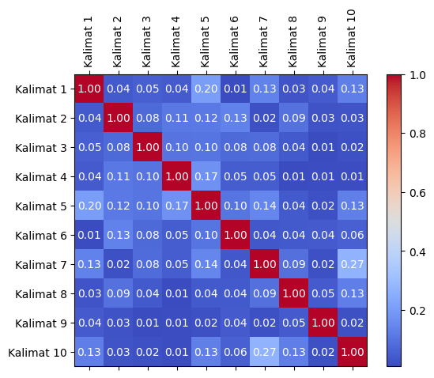
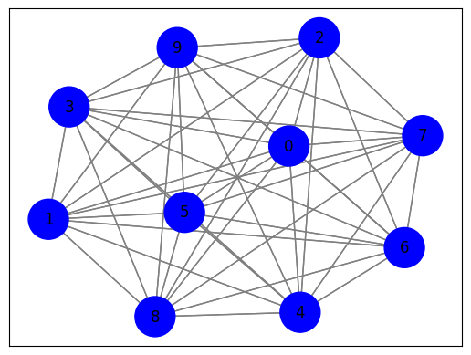

Crawling Website Berita#
Crawling Web#
import requests
from bs4 import BeautifulSoup
import nltk
# Unduh konten halaman web berita
url = "https://www.antaranews.com/berita/3407430/malaysia-kutuk-peluncuran-rudal-balistik-korut?utm_source=antaranews&utm_medium=desktop&utm_campaign=terkini"
response = requests.get(url)
html = response.text
# Parsing halaman web menggunakan BeautifulSoup
soup = BeautifulSoup(html, 'html.parser')
# Ekstraksi teks dari elemen-elemen yang berisi berita
article = soup.find('div' ,class_="post-content clearfix") # Sesuaikan dengan struktur HTML halaman web berita
article_text = article.get_text()
# Tokenisasi teks menjadi kalimat menggunakan nltk
nltk.download('punkt') # Pastikan Anda sudah mengunduh tokenisasi kalimat nltk
sentences = nltk.sent_tokenize(article_text)
# Cetak kalimat-kalimat
for sentence in sentences:
print(sentence)
Kuala Lumpur (ANTARA) - Malaysia mengutuk peluncuran rudal balistik baru-baru ini oleh Korea Utara, termasuk peluncuran rudal balistik jarak antarbenua pada 18 Februari 2023.
Kementerian Luar Negeri Malaysia dalam keterangan pers dikeluarkan di Putrajaya, Selasa, menyebutkan Malaysia sangat menyesalkan kejadian itu yang merupakan ancaman serius untuk perdamaian dan keamanan dunia.
Tindakan Korea Utara tersebut hanya akan semakin meningkatkan ketegangan regional dan menghambat prospek perdamaian abadi di Semenanjung Korea.
Malaysia mendesak Korea Utara untuk menahan diri dari tindakan provokatif dan ilegal lebih lanjut, mematuhi kewajiban berdasarkan resolusi Dewan Keamanan PBB (DK PBB) yang relevan dengan komitmen internasional.
Malaysia juga mendesak Korea Utara untuk segera menghentikan program rudal nuklir dan balistik.
Pernyataan itu juga menyebutkan bahwa sangat penting bagi pihak- pihak terkait untuk melanjutkan dialog guna mencapai denuklirisasi Semenanjung Korea yang lengkap, dapat diverifikasi, dan tidak dapat diubah.
Kementerian Pertahanan Jepang mengatakan bahwa Korea Utara menembakkan dua rudal balistik ke Laut Jepang, Senin (20/2), sehari setelah Amerika Serikat (AS) mengadakan latihan gabungan dengan sekutu Asia Timur dan dua hari setelah negara tertutup tersebut meluncurkan rudal balistik antar benua (ICBM).
Kedua rudal tampaknya jatuh di luar zona ekonomi eksklusif (ZEE) Jepang dan tidak ada laporan kerusakan pesawat atau kapal, kata kementerian.
Rudal pertama diluncurkan sekitar pukul 6:59 pagi, mencapai ketinggian sekitar 100 km dan menempuh jarak sekitar 400 km, sedangkan yang kedua diluncurkan sekitar pukul 7:10 pagi, mencapai ketinggian sekitar 50 km dan menempuh jarak sekitar 350 km, menurut kementerian.
Baca juga: Korut tembakkan 2 rudal ke Laut Jepang setelah peluncuran ICBM
Baca juga: Jepang dan AS latihan udara gabungan setelah Korut uji coba rudal
Baca juga: Korut tembakkan rudal yang jatuh di wilayah Jepang
Pewarta: Virna P SetyoriniEditor: Atman Ahdiat COPYRIGHT © ANTARA 2023
[nltk_data] Downloading package punkt to /root/nltk_data...
[nltk_data] Package punkt is already up-to-date!
TF_IDF#
from sklearn.feature_extraction.text import TfidfVectorizer
# Inisialisasi penghitung TF-IDF
tfidf_vectorizer = TfidfVectorizer()
# Hitung TF-IDF
tfidf_matrix = tfidf_vectorizer.fit_transform(sentences)
# Daftar kata kunci
feature_names = tfidf_vectorizer.get_feature_names_out()
# Konversi matriks TF-IDF menjadi bentuk yang lebih mudah dibaca
tfidf_values = tfidf_matrix.toarray()
# Cetak TF-IDF untuk setiap kata dalam setiap kalimat
for i, sentence in enumerate(sentences):
print(f"Kalimat {i + 1}: {sentence}")
for j, word in enumerate(feature_names):
tfidf_value = tfidf_values[i][j]
if tfidf_value > 0:
print(f"{word}: {tfidf_value:.4f}")
print()
Kalimat 1:
Kuala Lumpur (ANTARA) - Malaysia mengutuk peluncuran rudal balistik baru-baru ini oleh Korea Utara, termasuk peluncuran rudal balistik jarak antarbenua pada 18 Februari 2023.
18: 0.2063
2023: 0.1754
antara: 0.1754
antarbenua: 0.2063
balistik: 0.3068
baru: 0.4126
februari: 0.2063
ini: 0.2063
jarak: 0.1754
korea: 0.1107
kuala: 0.2063
lumpur: 0.2063
malaysia: 0.1364
mengutuk: 0.2063
oleh: 0.2063
pada: 0.2063
peluncuran: 0.3507
rudal: 0.2215
termasuk: 0.2063
utara: 0.1225
Kalimat 2: Kementerian Luar Negeri Malaysia dalam keterangan pers dikeluarkan di Putrajaya, Selasa, menyebutkan Malaysia sangat menyesalkan kejadian itu yang merupakan ancaman serius untuk perdamaian dan keamanan dunia.
ancaman: 0.2187
dalam: 0.2187
dan: 0.0886
di: 0.1446
dikeluarkan: 0.2187
dunia: 0.2187
itu: 0.1859
keamanan: 0.1859
kejadian: 0.2187
kementerian: 0.1446
keterangan: 0.2187
luar: 0.1859
malaysia: 0.2892
menyebutkan: 0.1859
menyesalkan: 0.2187
merupakan: 0.2187
negeri: 0.2187
perdamaian: 0.1859
pers: 0.2187
putrajaya: 0.2187
sangat: 0.1859
selasa: 0.2187
serius: 0.2187
untuk: 0.1446
yang: 0.1299
Kalimat 3: Tindakan Korea Utara tersebut hanya akan semakin meningkatkan ketegangan regional dan menghambat prospek perdamaian abadi di Semenanjung Korea.
abadi: 0.2673
akan: 0.2673
dan: 0.1082
di: 0.1767
hanya: 0.2673
ketegangan: 0.2673
korea: 0.2870
menghambat: 0.2673
meningkatkan: 0.2673
perdamaian: 0.2272
prospek: 0.2673
regional: 0.2673
semakin: 0.2673
semenanjung: 0.2272
tersebut: 0.2272
tindakan: 0.2272
utara: 0.1587
Kalimat 4: Malaysia mendesak Korea Utara untuk menahan diri dari tindakan provokatif dan ilegal lebih lanjut, mematuhi kewajiban berdasarkan resolusi Dewan Keamanan PBB (DK PBB) yang relevan dengan komitmen internasional.
berdasarkan: 0.2003
dan: 0.0811
dari: 0.2003
dengan: 0.1703
dewan: 0.2003
diri: 0.2003
dk: 0.2003
ilegal: 0.2003
internasional: 0.2003
keamanan: 0.1703
kewajiban: 0.2003
komitmen: 0.2003
korea: 0.1075
lanjut: 0.2003
lebih: 0.2003
malaysia: 0.1325
mematuhi: 0.2003
menahan: 0.2003
mendesak: 0.1703
pbb: 0.4006
provokatif: 0.2003
relevan: 0.2003
resolusi: 0.2003
tindakan: 0.1703
untuk: 0.1325
utara: 0.1189
yang: 0.1189
Kalimat 5: Malaysia juga mendesak Korea Utara untuk segera menghentikan program rudal nuklir dan balistik.
balistik: 0.2664
dan: 0.1450
juga: 0.2664
korea: 0.1923
malaysia: 0.2368
mendesak: 0.3045
menghentikan: 0.3581
nuklir: 0.3581
program: 0.3581
rudal: 0.1923
segera: 0.3581
untuk: 0.2368
utara: 0.2127
Kalimat 6: Pernyataan itu juga menyebutkan bahwa sangat penting bagi pihak- pihak terkait untuk melanjutkan dialog guna mencapai denuklirisasi Semenanjung Korea yang lengkap, dapat diverifikasi, dan tidak dapat diubah.
bagi: 0.1967
bahwa: 0.1672
dan: 0.0796
dapat: 0.3933
denuklirisasi: 0.1967
dialog: 0.1967
diubah: 0.1967
diverifikasi: 0.1967
guna: 0.1967
itu: 0.1672
juga: 0.1463
korea: 0.1056
lengkap: 0.1967
melanjutkan: 0.1967
mencapai: 0.1672
menyebutkan: 0.1672
penting: 0.1967
pernyataan: 0.1967
pihak: 0.3933
sangat: 0.1672
semenanjung: 0.1672
terkait: 0.1967
tidak: 0.1672
untuk: 0.1300
yang: 0.1168
Kalimat 7: Kementerian Pertahanan Jepang mengatakan bahwa Korea Utara menembakkan dua rudal balistik ke Laut Jepang, Senin (20/2), sehari setelah Amerika Serikat (AS) mengadakan latihan gabungan dengan sekutu Asia Timur dan dua hari setelah negara tertutup tersebut meluncurkan rudal balistik antar benua (ICBM).
20: 0.1618
amerika: 0.1618
antar: 0.1618
as: 0.1375
asia: 0.1618
bahwa: 0.1375
balistik: 0.2406
benua: 0.1618
dan: 0.0655
dengan: 0.1375
dua: 0.3235
gabungan: 0.1375
hari: 0.1618
icbm: 0.1375
jepang: 0.2406
ke: 0.1375
kementerian: 0.1070
korea: 0.0868
latihan: 0.1375
laut: 0.1375
meluncurkan: 0.1618
menembakkan: 0.1618
mengadakan: 0.1618
mengatakan: 0.1618
negara: 0.1618
pertahanan: 0.1618
rudal: 0.1737
sehari: 0.1618
sekutu: 0.1618
senin: 0.1618
serikat: 0.1618
setelah: 0.2750
tersebut: 0.1375
tertutup: 0.1618
timur: 0.1618
utara: 0.0961
Kalimat 8: Kedua rudal tampaknya jatuh di luar zona ekonomi eksklusif (ZEE) Jepang dan tidak ada laporan kerusakan pesawat atau kapal, kata kementerian.
ada: 0.2442
atau: 0.2442
dan: 0.0989
di: 0.1615
ekonomi: 0.2442
eksklusif: 0.2442
jatuh: 0.2076
jepang: 0.1816
kapal: 0.2442
kata: 0.2442
kedua: 0.2076
kementerian: 0.1615
kerusakan: 0.2442
laporan: 0.2442
luar: 0.2076
pesawat: 0.2442
rudal: 0.1311
tampaknya: 0.2442
tidak: 0.2076
zee: 0.2442
zona: 0.2442
Kalimat 9: Rudal pertama diluncurkan sekitar pukul 6:59 pagi, mencapai ketinggian sekitar 100 km dan menempuh jarak sekitar 400 km, sedangkan yang kedua diluncurkan sekitar pukul 7:10 pagi, mencapai ketinggian sekitar 50 km dan menempuh jarak sekitar 350 km, menurut kementerian.
10: 0.1059
100: 0.1059
350: 0.1059
400: 0.1059
50: 0.1059
59: 0.1059
dan: 0.0857
diluncurkan: 0.2117
jarak: 0.1800
kedua: 0.0900
kementerian: 0.0700
ketinggian: 0.2117
km: 0.4234
mencapai: 0.1800
menempuh: 0.2117
menurut: 0.1059
pagi: 0.2117
pertama: 0.1059
pukul: 0.2117
rudal: 0.0568
sedangkan: 0.1059
sekitar: 0.6352
yang: 0.0629
Kalimat 10: Baca juga: Korut tembakkan 2 rudal ke Laut Jepang setelah peluncuran ICBM
Baca juga: Jepang dan AS latihan udara gabungan setelah Korut uji coba rudal
Baca juga: Korut tembakkan rudal yang jatuh di wilayah Jepang
Pewarta: Virna P SetyoriniEditor: Atman Ahdiat COPYRIGHT © ANTARA 2023
2023: 0.1140
ahdiat: 0.1341
antara: 0.1140
as: 0.1140
atman: 0.1341
baca: 0.4023
coba: 0.1341
copyright: 0.1341
dan: 0.0543
di: 0.0887
gabungan: 0.1140
icbm: 0.1140
jatuh: 0.1140
jepang: 0.2992
juga: 0.2992
ke: 0.1140
korut: 0.4023
latihan: 0.1140
laut: 0.1140
peluncuran: 0.1140
pewarta: 0.1341
rudal: 0.2159
setelah: 0.2280
setyorinieditor: 0.1341
tembakkan: 0.2682
udara: 0.1341
uji: 0.1341
virna: 0.1341
wilayah: 0.1341
yang: 0.0796
Cosine Similarity antara Kalimat dan vektor tf-idf#
from sklearn.metrics.pairwise import cosine_similarity
from sklearn.feature_extraction.text import TfidfVectorizer
# Indeks kalimat yang akan dibandingkan
sentence1_index = 0 # Ganti dengan indeks kalimat pertama yang ingin Anda bandingkan
sentence2_index = 1 # Ganti dengan indeks kalimat kedua yang ingin Anda bandingkan
# Ambil vektor TF-IDF untuk kedua kalimat
tfidf_vector1 = tfidf_matrix[sentence1_index]
tfidf_vector2 = tfidf_matrix[sentence2_index]
# Hitung cosine similarity antara kedua vektor
similarity = cosine_similarity(tfidf_vector1, tfidf_vector2)
# Cetak hasil cosine similarity
print(f"Cosine Similarity antara Kalimat {sentence1_index + 1} dan Kalimat {sentence2_index + 1}: {similarity[0][0]:.4f}")
Cosine Similarity antara Kalimat 1 dan Kalimat 2: 0.0394
Cetak hasil similarity_matrix#
# Matriks TF-IDF telah dihitung sebelumnya (tfidf_matrix)
# Hitung cosine similarity antara semua pasangan kalimat
similarity_matrix = cosine_similarity(tfidf_matrix, tfidf_matrix)
# Cetak hasil similarity_matrix
num_sentences = len(sentences) # Jumlah kalimat
for i in range(num_sentences):
for j in range(i+1, num_sentences):
similarity = similarity_matrix[i][j]
print(f"Cosine Similarity antara Kalimat {i + 1} dan Kalimat {j + 1}: {similarity:.4f}")
Cosine Similarity antara Kalimat 1 dan Kalimat 2: 0.0394
Cosine Similarity antara Kalimat 1 dan Kalimat 3: 0.0512
Cosine Similarity antara Kalimat 1 dan Kalimat 4: 0.0445
Cosine Similarity antara Kalimat 1 dan Kalimat 5: 0.2039
Cosine Similarity antara Kalimat 1 dan Kalimat 6: 0.0117
Cosine Similarity antara Kalimat 1 dan Kalimat 7: 0.1337
Cosine Similarity antara Kalimat 1 dan Kalimat 8: 0.0290
Cosine Similarity antara Kalimat 1 dan Kalimat 9: 0.0441
Cosine Similarity antara Kalimat 1 dan Kalimat 10: 0.1278
Cosine Similarity antara Kalimat 2 dan Kalimat 3: 0.0774
Cosine Similarity antara Kalimat 2 dan Kalimat 4: 0.1117
Cosine Similarity antara Kalimat 2 dan Kalimat 5: 0.1156
Cosine Similarity antara Kalimat 2 dan Kalimat 6: 0.1343
Cosine Similarity antara Kalimat 2 dan Kalimat 7: 0.0213
Cosine Similarity antara Kalimat 2 dan Kalimat 8: 0.0940
Cosine Similarity antara Kalimat 2 dan Kalimat 9: 0.0259
Cosine Similarity antara Kalimat 2 dan Kalimat 10: 0.0280
Cosine Similarity antara Kalimat 3 dan Kalimat 4: 0.0972
Cosine Similarity antara Kalimat 3 dan Kalimat 5: 0.1046
Cosine Similarity antara Kalimat 3 dan Kalimat 6: 0.0769
Cosine Similarity antara Kalimat 3 dan Kalimat 7: 0.0785
Cosine Similarity antara Kalimat 3 dan Kalimat 8: 0.0392
Cosine Similarity antara Kalimat 3 dan Kalimat 9: 0.0093
Cosine Similarity antara Kalimat 3 dan Kalimat 10: 0.0215
Cosine Similarity antara Kalimat 4 dan Kalimat 5: 0.1723
Cosine Similarity antara Kalimat 4 dan Kalimat 6: 0.0489
Cosine Similarity antara Kalimat 4 dan Kalimat 7: 0.0495
Cosine Similarity antara Kalimat 4 dan Kalimat 8: 0.0080
Cosine Similarity antara Kalimat 4 dan Kalimat 9: 0.0144
Cosine Similarity antara Kalimat 4 dan Kalimat 10: 0.0139
Cosine Similarity antara Kalimat 5 dan Kalimat 6: 0.1016
Cosine Similarity antara Kalimat 5 dan Kalimat 7: 0.1441
Cosine Similarity antara Kalimat 5 dan Kalimat 8: 0.0395
Cosine Similarity antara Kalimat 5 dan Kalimat 9: 0.0234
Cosine Similarity antara Kalimat 5 dan Kalimat 10: 0.1291
Cosine Similarity antara Kalimat 6 dan Kalimat 7: 0.0374
Cosine Similarity antara Kalimat 6 dan Kalimat 8: 0.0426
Cosine Similarity antara Kalimat 6 dan Kalimat 9: 0.0443
Cosine Similarity antara Kalimat 6 dan Kalimat 10: 0.0574
Cosine Similarity antara Kalimat 7 dan Kalimat 8: 0.0902
Cosine Similarity antara Kalimat 7 dan Kalimat 9: 0.0230
Cosine Similarity antara Kalimat 7 dan Kalimat 10: 0.2698
Cosine Similarity antara Kalimat 8 dan Kalimat 9: 0.0459
Cosine Similarity antara Kalimat 8 dan Kalimat 10: 0.1260
Cosine Similarity antara Kalimat 9 dan Kalimat 10: 0.0219
Menjadikan dataframe#
import pandas as pd
# Matriks TF-IDF telah dihitung sebelumnya (tfidf_matrix)
# Hitung cosine similarity antara semua pasangan kalimat
similarity_matrix = cosine_similarity(tfidf_matrix, tfidf_matrix)
# Nama kolom dan indeks untuk DataFrame
sentence_indices = [f"Kalimat {i + 1}" for i in range(len(sentences))]
# Buat DataFrame dari hasil cosine similarity
df = pd.DataFrame(similarity_matrix, columns=sentence_indices, index=sentence_indices)
# Cetak DataFrame
df
| Kalimat 1 | Kalimat 2 | Kalimat 3 | Kalimat 4 | Kalimat 5 | Kalimat 6 | Kalimat 7 | Kalimat 8 | Kalimat 9 | Kalimat 10 | |
|---|---|---|---|---|---|---|---|---|---|---|
| Kalimat 1 | 1.000000 | 0.039443 | 0.051220 | 0.044543 | 0.203947 | 0.011691 | 0.133676 | 0.029032 | 0.044145 | 0.127775 |
| Kalimat 2 | 0.039443 | 1.000000 | 0.077378 | 0.111737 | 0.115566 | 0.134256 | 0.021267 | 0.094038 | 0.025876 | 0.027967 |
| Kalimat 3 | 0.051220 | 0.077378 | 1.000000 | 0.097211 | 0.104628 | 0.076907 | 0.078505 | 0.039241 | 0.009280 | 0.021547 |
| Kalimat 4 | 0.044543 | 0.111737 | 0.097211 | 1.000000 | 0.172311 | 0.048930 | 0.049495 | 0.008021 | 0.014432 | 0.013876 |
| Kalimat 5 | 0.203947 | 0.115566 | 0.104628 | 0.172311 | 1.000000 | 0.101606 | 0.144110 | 0.039545 | 0.023360 | 0.129079 |
| Kalimat 6 | 0.011691 | 0.134256 | 0.076907 | 0.048930 | 0.101606 | 1.000000 | 0.037377 | 0.042581 | 0.044260 | 0.057383 |
| Kalimat 7 | 0.133676 | 0.021267 | 0.078505 | 0.049495 | 0.144110 | 0.037377 | 1.000000 | 0.090216 | 0.022973 | 0.269795 |
| Kalimat 8 | 0.029032 | 0.094038 | 0.039241 | 0.008021 | 0.039545 | 0.042581 | 0.090216 | 1.000000 | 0.045910 | 0.125987 |
| Kalimat 9 | 0.044145 | 0.025876 | 0.009280 | 0.014432 | 0.023360 | 0.044260 | 0.022973 | 0.045910 | 1.000000 | 0.021932 |
| Kalimat 10 | 0.127775 | 0.027967 | 0.021547 | 0.013876 | 0.129079 | 0.057383 | 0.269795 | 0.125987 | 0.021932 | 1.000000 |
Menampilkan nilai similarity pada matriks menggunakan matplotlib#
import pandas as pd
import numpy as np
import matplotlib.pyplot as plt
# Matriks TF-IDF telah dihitung sebelumnya (tfidf_matrix)
# Hitung cosine similarity antara semua pasangan kalimat
similarity_matrix = cosine_similarity(tfidf_matrix, tfidf_matrix)
# Nama kolom dan indeks untuk DataFrame
sentence_indices = [f"Kalimat {i + 1}" for i in range(len(sentences))]
# Buat DataFrame dari hasil cosine similarity
df = pd.DataFrame(similarity_matrix, columns=sentence_indices, index=sentence_indices)
# Membuat grafik matriks
fig, ax = plt.subplots()
cax = ax.matshow(df, cmap='coolwarm')
fig.colorbar(cax)
# Memberi label pada sumbu X dan Y
ax.set_xticks(np.arange(len(df.columns)))
ax.set_yticks(np.arange(len(df.index)))
ax.set_xticklabels(df.columns, rotation=90)
ax.set_yticklabels(df.index)
# Menampilkan nilai similarity pada matriks
for i in range(len(df.index)):
for j in range(len(df.columns)):
text = ax.text(j, i, f'{df.iat[i, j]:.2f}', ha='center', va='center', color='w')
plt.show()

Menampilkan menggunakan networkx#
import networkx as nx
# Buat grafik dari matriks similarity
G = nx.Graph()
# Tambahkan simpul (node) ke grafik yang mewakili setiap kalimat
for sentence in sentences:
G.add_node(sentence)
# Tambahkan tepi (edge) antara kalimat berdasarkan similarity
for i in range(len(sentences)):
for j in range(i + 1, len(sentences)):
similarity = df.iloc[i, j] # Mengambil similarity dari DataFrame
if similarity > 0:
G.add_edge(sentences[i], sentences[j], weight=similarity)
# Hitung closeness centrality untuk setiap simpul
closeness_centrality = nx.closeness_centrality(G, distance='weight')
# Cetak closeness centrality
for sentence, centrality in closeness_centrality.items():
print(f"Closeness Centrality of {sentence}: {centrality:.4f}")
Closeness Centrality of
Kuala Lumpur (ANTARA) - Malaysia mengutuk peluncuran rudal balistik baru-baru ini oleh Korea Utara, termasuk peluncuran rudal balistik jarak antarbenua pada 18 Februari 2023.: 23.6787
Closeness Centrality of Kementerian Luar Negeri Malaysia dalam keterangan pers dikeluarkan di Putrajaya, Selasa, menyebutkan Malaysia sangat menyesalkan kejadian itu yang merupakan ancaman serius untuk perdamaian dan keamanan dunia.: 26.5709
Closeness Centrality of Tindakan Korea Utara tersebut hanya akan semakin meningkatkan ketegangan regional dan menghambat prospek perdamaian abadi di Semenanjung Korea.: 30.9190
Closeness Centrality of Malaysia mendesak Korea Utara untuk menahan diri dari tindakan provokatif dan ilegal lebih lanjut, mematuhi kewajiban berdasarkan resolusi Dewan Keamanan PBB (DK PBB) yang relevan dengan komitmen internasional.: 34.4373
Closeness Centrality of Malaysia juga mendesak Korea Utara untuk segera menghentikan program rudal nuklir dan balistik.: 21.9874
Closeness Centrality of Pernyataan itu juga menyebutkan bahwa sangat penting bagi pihak- pihak terkait untuk melanjutkan dialog guna mencapai denuklirisasi Semenanjung Korea yang lengkap, dapat diverifikasi, dan tidak dapat diubah.: 21.8196
Closeness Centrality of Kementerian Pertahanan Jepang mengatakan bahwa Korea Utara menembakkan dua rudal balistik ke Laut Jepang, Senin (20/2), sehari setelah Amerika Serikat (AS) mengadakan latihan gabungan dengan sekutu Asia Timur dan dua hari setelah negara tertutup tersebut meluncurkan rudal balistik antar benua (ICBM).: 26.7054
Closeness Centrality of Kedua rudal tampaknya jatuh di luar zona ekonomi eksklusif (ZEE) Jepang dan tidak ada laporan kerusakan pesawat atau kapal, kata kementerian.: 31.3412
Closeness Centrality of Rudal pertama diluncurkan sekitar pukul 6:59 pagi, mencapai ketinggian sekitar 100 km dan menempuh jarak sekitar 400 km, sedangkan yang kedua diluncurkan sekitar pukul 7:10 pagi, mencapai ketinggian sekitar 50 km dan menempuh jarak sekitar 350 km, menurut kementerian.: 39.3507
Closeness Centrality of Baca juga: Korut tembakkan 2 rudal ke Laut Jepang setelah peluncuran ICBM
Baca juga: Jepang dan AS latihan udara gabungan setelah Korut uji coba rudal
Baca juga: Korut tembakkan rudal yang jatuh di wilayah Jepang
Pewarta: Virna P SetyoriniEditor: Atman Ahdiat COPYRIGHT © ANTARA 2023: 29.4379
import networkx as nx
# Matriks TF-IDF telah dihitung sebelumnya (tfidf_matrix)
# Hitung cosine similarity antara semua pasangan kalimat
similarity_matrix = cosine_similarity(tfidf_matrix, tfidf_matrix)
# Buat grafik berarah (DiGraph) berdasarkan similarity_matrix
G = nx.DiGraph()
for i in range(len(similarity_matrix)):
G.add_node(i) # Tambahkan node dengan indeks numerik
for i in range(len(similarity_matrix)):
for j in range(len(similarity_matrix)):
similarity = similarity_matrix[i][j]
if similarity > 0 and i != j: # Pastikan node tidak menghubungkan dirinya sendiri
G.add_edge(i, j)
# Hitung closeness centrality
closeness_centrality = nx.closeness_centrality(G)
# Visualisasi closeness centrality
pos = nx.spring_layout(G) # Atur layout grafik
node_size = [v * 1000 for v in closeness_centrality.values()] # Ubah ukuran node berdasarkan closeness centrality, dengan faktor pengurangan ukuran
nx.draw_networkx_nodes(G, pos, node_size=node_size, node_color='b')
nx.draw_networkx_edges(G, pos, edge_color='gray', arrows=True)
nx.draw_networkx_labels(G, pos)
plt.show()
# Cetak closeness centrality
print("Closeness Centrality:")
for node, closeness in closeness_centrality.items():
print(f"Node {node}: {closeness:.4f}")

Closeness Centrality:
Node 0: 1.0000
Node 1: 1.0000
Node 2: 1.0000
Node 3: 1.0000
Node 4: 1.0000
Node 5: 1.0000
Node 6: 1.0000
Node 7: 1.0000
Node 8: 1.0000
Node 9: 1.0000